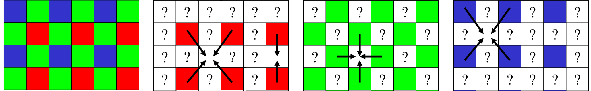
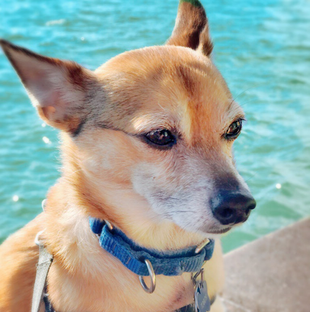
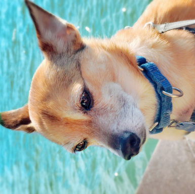
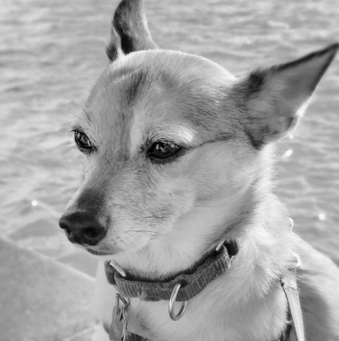
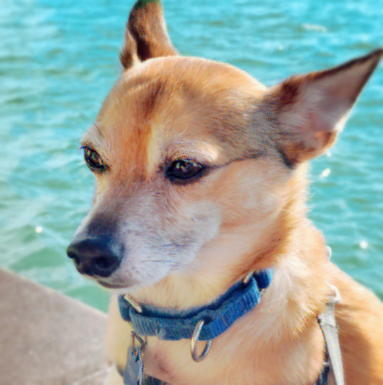
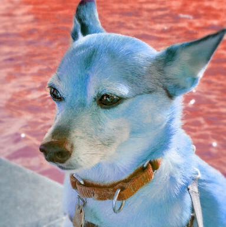
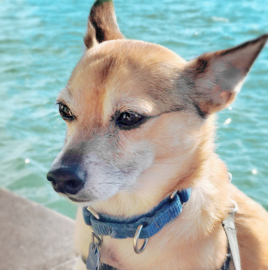
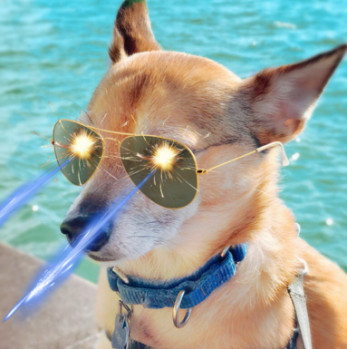

\(\newcommand{\A}{\mat{A}}\)
\(\newcommand{\B}{\mat{B}}\)
\(\newcommand{\C}{\mat{C}}\)
\(\newcommand{\D}{\mat{D}}\)
\(\newcommand{\E}{\mat{E}}\)
\(\newcommand{\F}{\mat{F}}\)
\(\newcommand{\G}{\mat{G}}\)
\(\newcommand{\H}{\mat{H}}\)
\(\newcommand{\I}{\mat{I}}\)
\(\newcommand{\J}{\mat{J}}\)
\(\newcommand{\K}{\mat{K}}\)
\(\newcommand{\L}{\mat{L}}\)
\(\newcommand{\M}{\mat{M}}\)
\(\newcommand{\N}{\mat{N}}\)
\(\newcommand{\One}{\mathbf{1}}\)
\(\newcommand{\P}{\mat{P}}\)
\(\newcommand{\Q}{\mat{Q}}\)
\(\newcommand{\Rot}{\mat{R}}\)
\(\newcommand{\R}{\mathbb{R}}\)
\(\newcommand{\S}{\mathcal{S}}\)
\(\newcommand{\T}{\mat{T}}\)
\(\newcommand{\U}{\mat{U}}\)
\(\newcommand{\V}{\mat{V}}\)
\(\newcommand{\W}{\mat{W}}\)
\(\newcommand{\X}{\mat{X}}\)
\(\newcommand{\Y}{\mat{Y}}\)
\(\newcommand{\argmax}{\mathop{\text{argmax}}}\)
\(\newcommand{\argmin}{\mathop{\text{argmin}}}\)
\(\newcommand{\a}{\vec{a}}\)
\(\newcommand{\b}{\vec{b}}\)
\(\newcommand{\c}{\vec{c}}\)
\(\newcommand{\d}{\vec{d}}\)
\(\newcommand{\e}{\vec{e}}\)
\(\newcommand{\f}{\vec{f}}\)
\(\newcommand{\g}{\vec{g}}\)
\(\newcommand{\mat}[1]{\mathbf{#1}}\)
\(\newcommand{\min}{\mathop{\text{min}}}\)
\(\newcommand{\m}{\vec{m}}\)
\(\newcommand{\n}{\vec{n}}\)
\(\newcommand{\p}{\vec{p}}\)
\(\newcommand{\q}{\vec{q}}\)
\(\newcommand{\r}{\vec{r}}\)
\(\newcommand{\transpose}{{\mathsf T}}\)
\(\newcommand{\tr}[1]{\mathop{\text{tr}}{\left(#1\right)}}\)
\(\newcommand{\s}{\vec{s}}\)
\(\newcommand{\t}{\vec{t}}\)
\(\newcommand{\u}{\vec{u}}\)
\(\newcommand{\vec}[1]{\mathbf{#1}}\)
\(\newcommand{\x}{\vec{x}}\)
\(\newcommand{\y}{\vec{y}}\)
\(\newcommand{\z}{\vec{z}}\)
\(\newcommand{\0}{\vec{0}}\)
\(\renewcommand{\v}{\vec{v}}\)
\(\renewcommand{\hat}[1]{\widehat{#1}}\)
Computer Graphics – Raster Images
To get started: Clone this repository and all its submodule dependencies using:
git clone --recursive https://github.com/alecjacobson/computer-graphics-raster-images.git
Do not fork: Clicking “Fork” will create a public repository. If you’d like to use GitHub while you work on your assignment, then mirror this repo as a new private repository: https://stackoverflow.com/questions/10065526/github-how-to-make-a-fork-of-public-repository-private
Introduction
Welcome to Computer Graphics! The main purpose of this assignment will be to get
you up and running with C++ and the cmake build setup used for our assignments.
Prerequisite installation
On all platforms, we will assume you have installed cmake and a modern c++
compiler on Mac OS X¹, Linux², or
Windows³.
We also assume that you have cloned this repository using the --recursive
flag (if not then issue git submodule update --init --recursive).
Layout
All assignments will have a similar directory and file layout:
README.md
CMakeLists.txt
main.cpp
include/
function1.h
function2.h
...
src/
function1.cpp
function2.cpp
...
data/
...
...
The README.md file will describe the background, contents and tasks of the
assignment.
The CMakeLists.txt file setups up the cmake build routine for this
assignment.
The main.cpp file will include the headers in the include/ directory and
link to the functions compiled in the src/ directory. This file contains the
main function that is executed when the program is run from the command line.
The include/ directory contains one file for each function that you will
implement as part of the assignment. Do not change these files.
The src/ directory contains empty implementations of the functions
specified in the include/ directory. This is where you will implement the
parts of the assignment.
The data/ directory contains sample input data for your program. Keep in
mind you should create your own test data to verify your program as you write
it. It is not necessarily sufficient that your program only works on the given
sample data.
Compilation
This and all following assignments will follow a typical cmake/make build
routine. Starting in this directory, issue:
mkdir build
cd build
cmake ..
If you are using Mac or Linux, then issue:
make
If you are using Windows, then running cmake .. should have created a Visual Studio solution file
called raster.sln that you can open and build from there. Building the raster project will generate an .exe file.
Why don’t you try this right now?
Execution
Once built, you can execute the assignment from inside the build/ using
./raster
Background
Every assignment, including this one, will start with a Background
section. This will cite a chapter of the book to read or review the math and
algorithms behind the task in the assignment. Students following the lectures
should already be familiar with this material.
Read Chapter 3 of Fundamentals of Computer Graphics (4th Edition).
The most common digital representation of a color image is a 2D array of
red/green/blue intensities at pixels. Since each entry in the array is actually
a 3-vector of color values, we can interpret an image as a 3-tensor or 3D array.
Memory on the computer is addressed linear, so an RGB image with a certain
width and height will be represented as width*height*3 numbers. How these
numbers are ordered is a matter of convention. In our assignment we use the
convention that the red value of pixel in the top-left corner comes first, then
its green value, then its blue value, and then the rgb values of its neighbor to
the right and so on across the row of pixels, and then moving to the next row
down the columns of rows.
Q: Suppose you have a 767×772 rgb image stored in an array called data. How
would you access the green value at the pixel on the 36th row and 89th
column?
A: data[1 + 3*(88+767*35)] (Remember C++ starts counting with 0).
Alpha map
Natural images (e.g., photographs) only require color information, but to
manipulate images it is often useful to also store a value representing how much
of a pixel is “covered” by the given color. Intuitively this value (called alpha
or \(α\)⁴) represents how opaque (the opposite of transparent) each pixel is.
When we store rgb + α image as a 4-channel rgba image. Just like rgb images,
rgba images are 3D arrays unrolled into a linear array in memory.
.png files can store rgba images, whereas our simpler .ppm file format only
stores grayscale or rgb images.
.ppm files
We’ll use a very basic uncompressed image file format to write out the results
of our tasks: the .ppm.
Like many image file formats, .ppm uses 8 bits per color value. Color
intensities are represented as an integer between 0 (0% intensity) and 255
(100% intensity). In our programs we will use unsigned char to represent these
values when reading, writing and doing simple operations. For numerically
sensitive computations (e.g., conversion between rgb and hsv), it is convenient
to convert values to decimal representations using double precision floating
point
numbers
0 is converted to 0.0 and 255 to 1.0.
Grayscale Images
Surprisingly there are
many
acceptable and reasonable ways to convert a color image into a
grayscale (“black and white”) image.
The complexity of each method scales with the amount that method accommodates
for human perception. For example, a very naive method is to average red, green
and blue intensities. A slightly better (and very popular method) is to take a
weighted average giving higher priority to green:
$$
i = 0.2126 r + 0.7152 g + 0.0722 b.
$$
Q: Why are humans more sensitive to green?
Hint: 🐒
Mosaic images
The raw color measurements made by modern digital cameras are typically stored
with a single color channel per pixel. This information is stored as a seemingly
1-channel image, but with an understood convention for interpreting each pixel
as the red, green or blue intensity value given some pattern. The most common is
the Bayer pattern. In this
assignment, we’ll assume the top left pixel is green, its right neighbor is blue
and neighbor below is red, and its
kitty-corner neighbor is
also green.
Q: Why are more sensors devoted to green?
Hint: 🐒
To demosaic an image, we would like to create a full rgb image without
downsampling the image resolution. So for each pixel, we’ll use the exact color
sample when it’s available and average available neighbors (in all 8 directions)
to fill in missing colors. This simple linear
interpolation-based
method has some blurring artifacts and can be improved with more complex
methods.

The Bayer-pattern image on the left has “exact” measurements of red, green and
blue colors at different pixels. The missing color information at each pixel
needs to be interpolated from neighbors (4 or 2). Just do “something
reasonable” for pixels on the very boundary of the image. image source
Color representation
RGB is just one way to represent a color. Another useful representation is store
the hue, saturation, and value of a
color. This “hsv” representation also has 3-channels: typically, the
hue or h channel is stored in degrees
(i.e., on a periodic scale) in the range \([0°,360°]\) and the
saturation s and
value v are given as absolute
values in \([0,1]\).
Converting between rgb and
hsv is
straightforward and makes it easy to implement certain image changes such as
shifting the hue of an image (e.g., Instagram’s “warmth” filter) and the
saturation of an image (e.g., Instagram’s “saturation” filter).
Tasks
Every assignment, including this one, will contain a Tasks section. This
will enumerate all of the tasks a student will need to complete for this
assignment. These tasks will match the header/implementation pairs in the
include//src/ directories.
Groundrules
Implementations of nearly any task you’re asked to implemented in this course
can be found online. Do not copy these and avoid googling for code; instead,
search the internet for explanations. Many topics have relevant wikipedia
articles. Use these as references. Always remember to cite any references in
your comments.
White List
Feel free and encouraged to use standard template library functions in #include
<algorithm> and #include <cmath> such as std::fmod and std::fabs.
src/rgba_to_rgb.cpp
Extract the 3-channel rgb data from a 4-channel rgba image.
src/write_ppm.cpp
Write an rgb or grayscale image to a .ppm file.
At this point, you should start seeing output files:
bayer.ppmcomposite.ppmdemosaicked.ppmdesaturated.ppmgray.ppmreflected.ppmrgb.ppmrotated.ppmshifted.ppm
If you’ve implemented src/rgba_to_rgb.cpp correctly then ./raster
../data/dog.png should produce this image in
rgb.ppm.
src/reflect.cpp
Horizontally reflect an image (like a mirror)

If you’ve implemented src/write_ppm.cpp correctly then ./raster
../data/dog.png should produce this image in
reflected.ppm.
src/rotate.cpp
Rotate an image 90° counter-clockwise

./raster
../data/dog.png should produce this image in
rotated.ppm.
src/rgb_to_gray.cpp
Convert a 3-channel RGB image to a 1-channel grayscale image.

./raster
../data/dog.png should produce this image in
gray.ppm.
src/simulate_bayer_mosaic.cpp
Simulate an image acquired from the Bayer mosaic by taking a 3-channel rgb image
and creating a single channel grayscale image composed of interleaved
red/green/blue channels. The output image should be the same size as the input but only one
channel.
./raster
../data/dog.png should produce this image in
bayer.ppm. Zoom in to see interleaving.
src/demosaic.cpp
Given a mosaiced image (interleaved GBRG colors in a single channel), created a
3-channel rgb image.

./raster ../data/dog.png should produce this image in
demosaicked.ppm.
src/rgb_to_hsv.cpp
Convert a color represented by red, green and blue intensities to its
representation using hue, saturation and value.
src/hsv_to_rgb.cpp
Convert a color represented by hue, saturation and value to its representation
using red, green and blue intensities.
src/hue_shift.cpp
Shift the hue of a color rgb image.
Hint: Use your rgb_to_hsv and hsv_to_rgb functions.

./raster
../data/dog.png should produce this image in
shifted.ppm.
src/desaturate.cpp
Desaturate a given rgb color image by a given factor.
Hint: Use your rgb_to_hsv and hsv_to_rgb functions.

./raster
../data/dog.png should produce this image in
desaturated.ppm.
src/over.cpp
Compute C = A Over B, where A and B are semi-transparent rgba images and
“Over” is the Porter-Duff Over operator.

./raster
../data/{dog,glasses,laser-beams,sparkles}.png should produce this image in
composite.ppm.
Submission
Submit your completed homework on MarkUs. Open the MarkUs course
page and submit all the .cpp files in your src/ directory under
Assignment 1: Raster Images in the raster-images repository.
Questions?
Direct your questions to the Issues page of this
repository.
Answers?
Help your fellow students by answering questions or positions helpful tips on
Issues page of this
repository.
¹ Mac Users
You will need to install Xcode if you haven’t already.
² Linux Users
Many linux distributions do not include gcc and the basic development tools
in their default installation. On Ubuntu, you need to install the following
packages (more than needed for this assignment but should cover the whole
course):
sudo apt-get install git
sudo apt-get install build-essential
sudo apt-get install cmake
sudo apt-get install libx11-dev
sudo apt-get install mesa-common-dev libgl1-mesa-dev libglu1-mesa-dev
sudo apt-get install libxrandr-dev
sudo apt-get install libxi-dev
sudo apt-get install libxmu-dev
sudo apt-get install libblas-dev
³ Windows Users
Our assignments only support the Microsoft Visual Studio 2015 compiler in
64bit mode. It will not work with a 32bit build and it will not work with
older versions of visual studio.
⁴ LaTeX
This markdown document, and those for all other assignments, contains
\(\LaTeX\) math. GitHub just shows the un-evaluated LaTeX code, but other
markdown browsers may show the typeset math. Alaternatively, open the
README.html (must be online) to view the equations.
For reference, you can generate README.html from the README.md using
multimarkdown:
cat markdown/header.md README.md | multimarkdown --process-html -o README.html